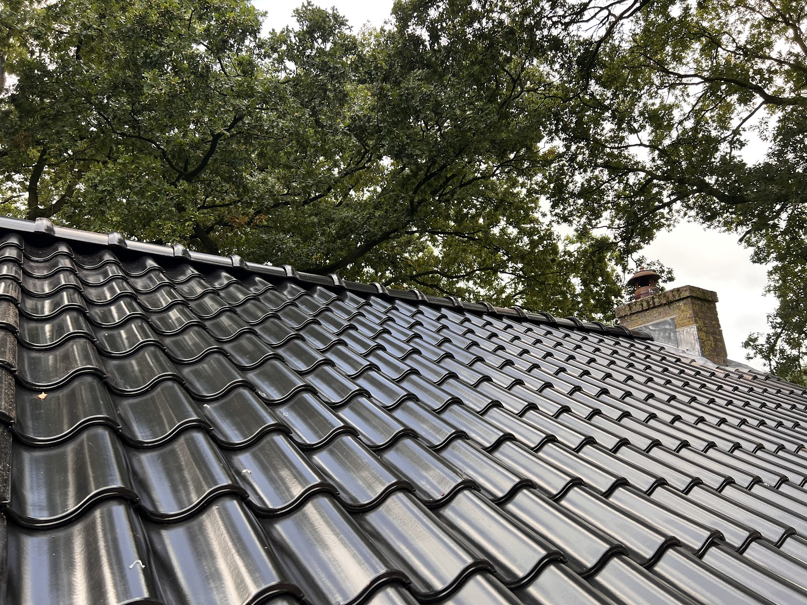
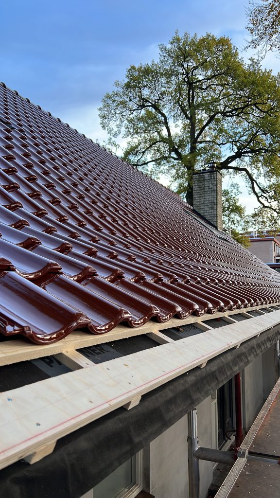

Pannendaken
Gescheurde, poreuze of verschoven pannen beschermen uw huis minder goed tegen regen, wind en vorst. Vervangt u ze op tijd, dan voorkomt u de hogere kosten van een complete renovatie.
Is het dak aan vernieuwing toe? Dan zeggen we dat eerlijk en leggen we het opnieuw, in de pan die bij uw huis past.